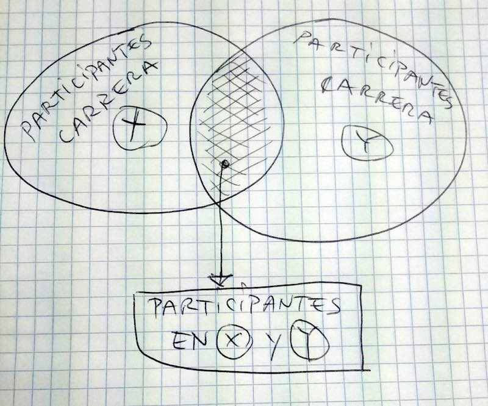

Puedes predecir tu tiempo en la maratón de Barcelona utilizando un modelo de regresión lineal obtenido cruzando los resultados en carreras populares de los años pasados.
Etiam vitae tortor. Etiam feugiat lorem non metus. Proin faucibus arcu quis ante. Fusce ac felis sit amet ligula pharetra condimentum. Donec venenatis vulputate lorem.
